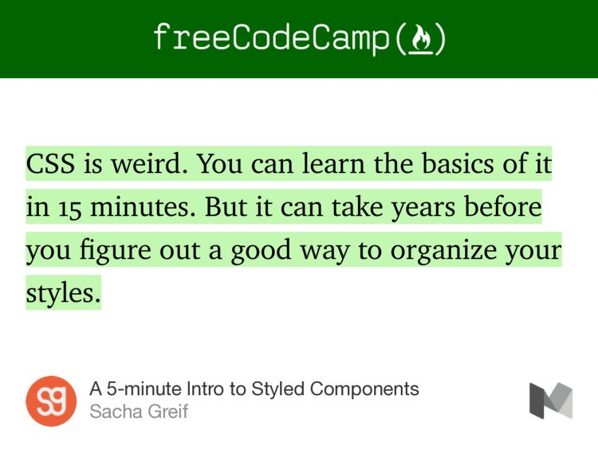
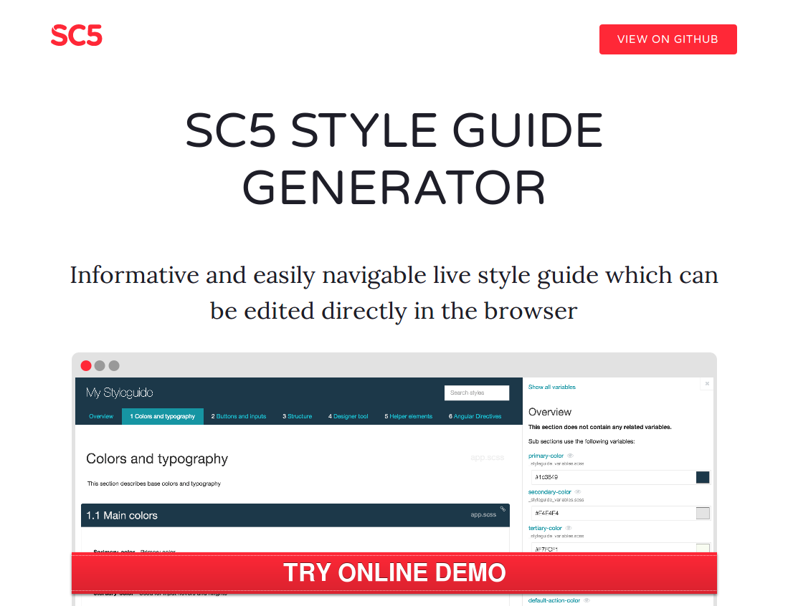
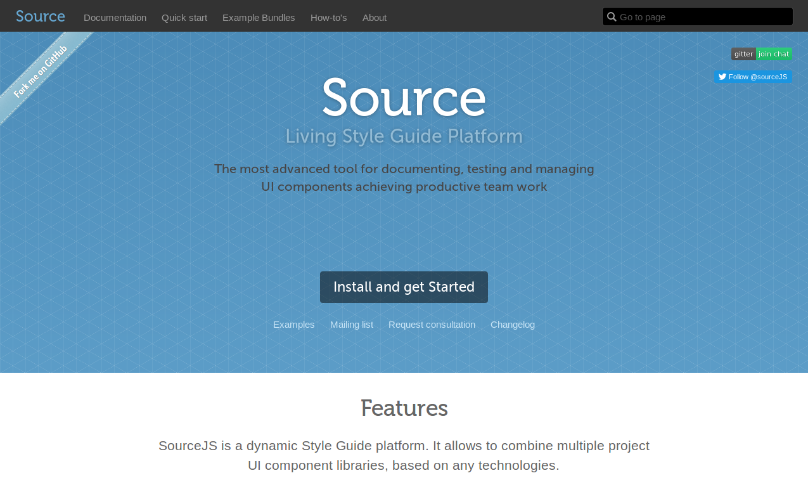
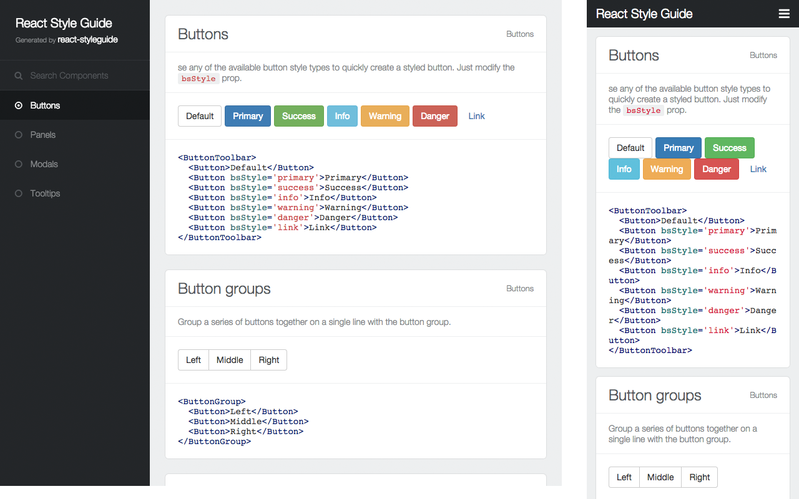

Виктор Павлов, FFW Agency
Зачем нужно, чтобы все было по фэн-шуй?
Потому, что CSS странный

А если серъезно:
- Позволяет отделить фронтенд и бэкенд и вести разработку параллельно
- Позволяет предоставить клиенту живые макеты до бекенд имплементации
- Пишем модульный (компонентный), легко поддерживаемый и расширяемы фронтенд
Что такое стайл-гайд для фронтенд
- Результат объединения работы UX-дизайнеров и разработчиков
- Модульнуя коллекцию всех элементов пользовательского интерфейса
- Фрагменты кода с примерами
Ключевые элементы стайл-гайд
- Содержание, которое предоставляет легкую навигацию по компонентам
- Цветовая палитра (в соответствующем формате, HEX для Web, UIColor для iOS app, и т.д.)
- Типографские стили
- Отзывчивая разметка (сетка), чтобы красиво разместить элементы
(это может, скорее даже должна быть та же сетка, что вы используете в проекте)
Описание компонентов
- Описание подходящего контекста использования: когда нужно использовать данный компонент, а не любой иной сходный с ним?
- Примеры кода
- Спецификацию для имплементации, включая информацию о позиционировании
- За и против для использования этого элемента (опционально)
Базовый лист компонентов
- Buttons
- Button groups
- Breadcrumbs
- Cards
- Tables
- Dialogs
- Grid lists of content, media, or photos
- Vertical lists
- Navigation menus (and subnavigation)
- Date and time pickers
- Progress and loading indicators
- Checkboxes
- Radio buttons
- Drop-down menus
- Sliders
- On-off switches
- Numeric-input steppers/incrementers
- Form fields (include variations with maximum character-count indicators, and indicators for when the field is required)
- Tabs
- Toolbars
- Tooltips
- Alert modals
- Icons
- Animations
- Tokens, also known as chips (e.g. email-address field)
Фронтенд стайл-гайд ≠ бренд-бук
Живой стайл-гайд
- Живой || Неживой
-
Живой выходит за пределы простого набора компонентов
- Наборы шаблонов и примеры страниц
- Часто синхронизирован со стилями проекта
- Спецификацию для имплементации, включая информацию о позиционировании
- За и против для использования этого элемента (опционально)
Итак вы решили, что вам это нужно?
Примеры генераторов стайл-гайдов
CS5

- Oснован на KSS
- Расширен некоторыми полезными функциями
- Хороший интерфейс
- Совместим AngularJS 1.x
- Парсит SASS, LESS, PostCSS и ванильный CSS
Докумментирование ограничено KSS
Не совсем «живой»

- Базируется на компонентном подходе
- Есть система для написания плагинов
- Интегрируем в стили проекта
- Использует Grunt
Давно не обновлялся
- Активно разрабатывается
- Основан на методологии Atomic design
- Может быть легко использован с любой методологией
- Генерирует статический сайт с примера шаблонов
- Можно связать с живым проектом
Еще несколько особенностей
- Существует в версиях для Node и PHP
- Позволяет включать одни шаблоны в другие и формировать компоненты
- Динамические данные для контента (используется как JSON, так и YML)
- Не зависит от каких-либо конкретных инструментов
- Позволяет документировать паттерны и создавать аннотации к ним
- Содержит готовые наборы стартовых паттернов: Bootstrap, Foundation или Material Design
- Можно расширить с помощью плагинов

- Работает с React на уровне компонентов
- Добавляем документацию в виде
статического свойства с объектов-описанием
import React from 'react'
import Button from './Button'
export default class extends React.Component {
static styleguide = {
index: '1.1',
category: 'Elements',
title: 'Button',
description: 'You can use **Markdown** within this `description` field.',
code: `<Button size='small|large' onClick={Function}>Cool Button</Button>`,
className: 'apply the css class'
}
onClick () {
alert('Alo!')
}
render () {
return (
<Button size='large' onClick={this.onClick}>Cool Button</Button>
)
}
}
А что, если не использовать готовый инструмент?
Джентельменский набор
- kss-node — для документирования CSS
- Шаблонизатор для HTML (Mustache, Twig, Pug…)
Even tables
| Locavore |
Umami |
Helvetica |
Vegan |
| Fingerstache |
Kale |
Chips |
Keytar |
| Sriracha |
Gluten-free |
Ennui |
Keffiyeh |
| Thundercats |
Jean |
Shorts |
Biodiesel |
| Terry |
Richardson |
Swag |
Blog |
It’s good to have information organized.
You can even shout this way
All nicely aligned to grid